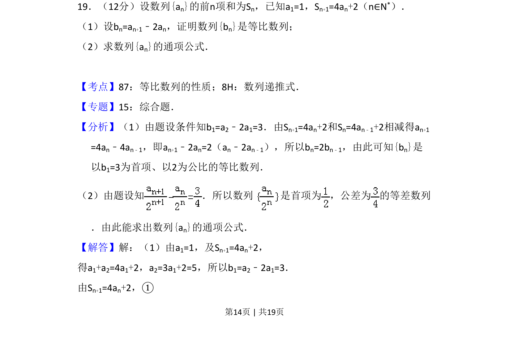
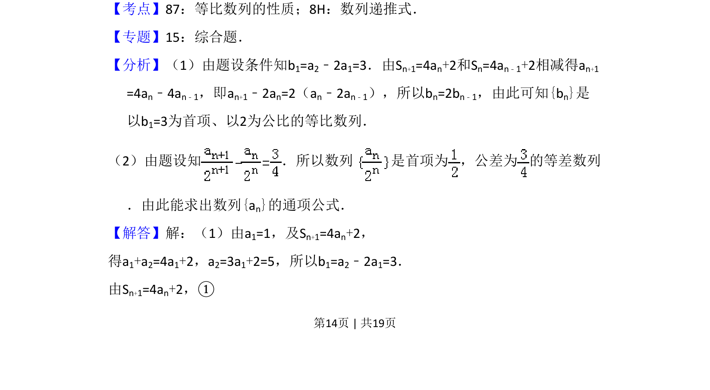
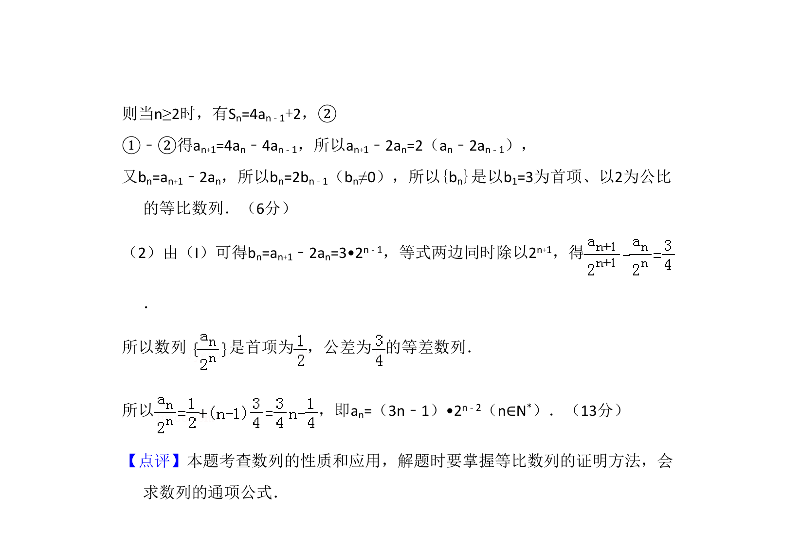

考点：等比数列性质 数列递推式

本题给出数列前n项和与项的关系，通过递推式证明数列为等比数列并求通项


📄 原 PDF 第 14 页：
素材/真题/吉林/2008-2024·（吉林）数学高考真题/2009年高考数学试卷（理）（全国卷Ⅱ）（解析卷）.pdf
19．（12分）设数列{an}的前n项和为Sn，已知a1=1，Sn+1=4an+2（n∈N*）． （1）设bn=an+1﹣2an，证明数列{bn}是等比数列； （2）求数列{an}的通项公式．
【考点】87：等比数列的性质；8H：数列递推式．菁优网版权所有 【专题】15：综合题． 【分析】（1）由题设条件知b1=a2﹣2a1=3．由Sn+1=4an+2和Sn=4an﹣1+2相减得an+1 =4an﹣4an﹣1，即an+1﹣2an=2（an﹣2an﹣1），所以bn=2bn﹣1，由此可知{bn}是 以b1=3为首项、以2为公比的等比数列． （2）由题设知 ．所以数列 是首项为 ，公差为 的等差数列 ．由此能求出数列{an}的通项公式． 【解答】解：（1）由a1=1，及Sn+1=4an+2， 得a1+a2=4a1+2，a2=3a1+2=5，所以b1=a2﹣2a1=3． 由Sn+1=4an+2，①